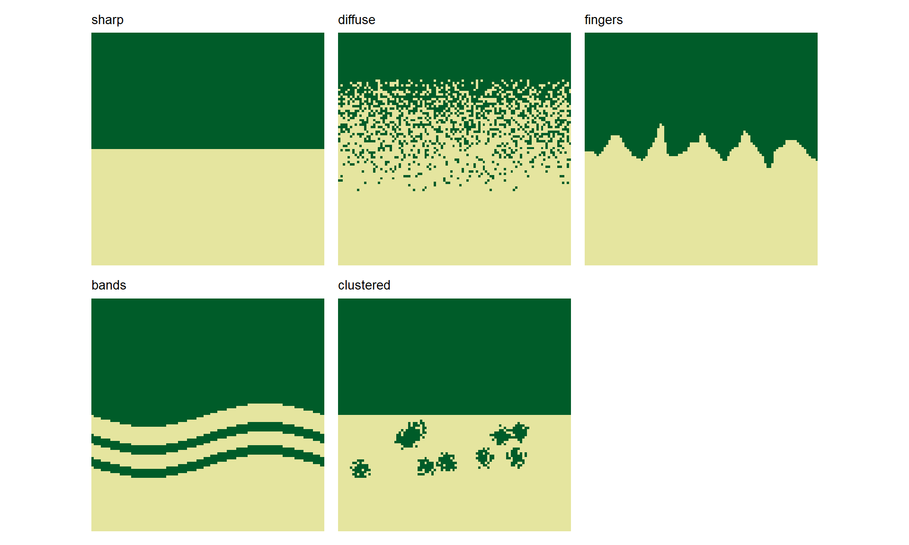
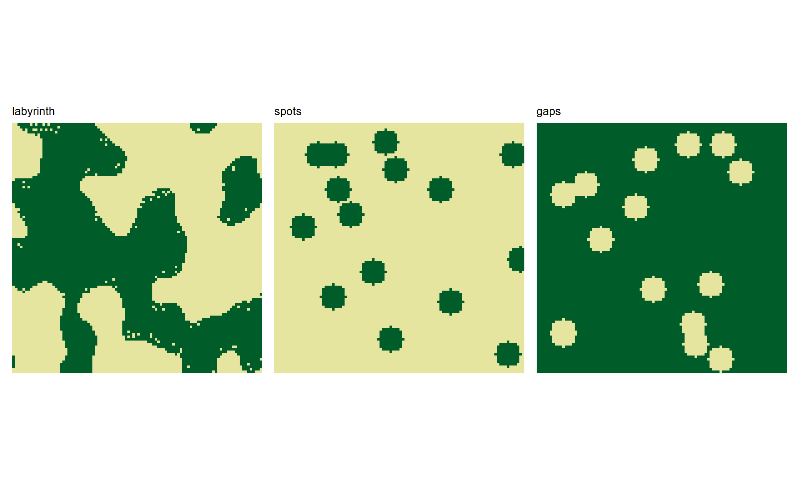
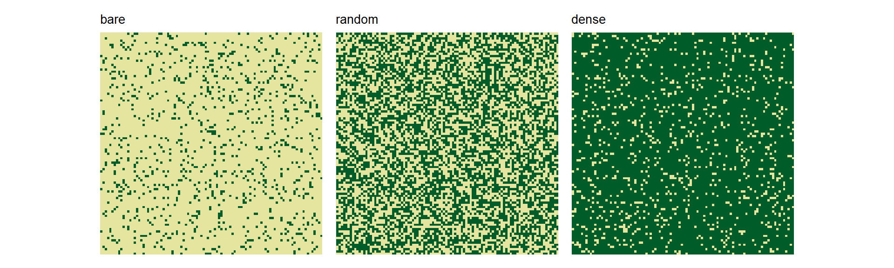

Introduction
Brief overview of landscape patterns and their ecological relevance.
Pattern Overview
The package provides 13 distinct landscape patterns divided into three categories. Each pattern can be customized with specific parameters, which we explore in detail below.
Boundary Patterns
Represent transitions between two classes (e.g., forest and non-forest) along boundaries:
boundary_patterns <- c(
"sharp",
"diffuse",
"fingers",
"bands",
"clustered"
)
boundary_showcase <- boundary_patterns |>
purrr::map(\(pattern) create_landscape(pattern, name = pattern))
plot_landscape_list(boundary_showcase, title = "name", show_legend = FALSE)
-
sharp: Abrupt boundary -
diffuse: Gradual transition with scattered elements -
fingers: Irregular, finger-like projections -
bands: Horizontal bands with sinusoidal variation -
clustered: Grouped patches near a boundary
Spatial Structure Patterns
Complex spatial arrangements and textures without clear boundaries:
spatial_patterns <- c("labyrinth", "spots", "gaps")
spatial_showcase <- spatial_patterns |>
purrr::map(\(pattern) create_landscape(pattern, name = pattern))
plot_landscape_list(spatial_showcase, title = "name", show_legend = FALSE)
-
labyrinth: Maze-like perlin noise patterns -
spots: Circular patches of one class -
gaps: Inverse of spots (circular patches of opposite class)
Random Patterns
Uniform random distribution with controllable density:
# Show random with different densities
random_patterns <- c("bare", "random", "dense")
random_showcase <- random_patterns |>
purrr::map(\(pattern) create_landscape(pattern, name = pattern))
plot_landscape_list(random_showcase, title = "name", show_legend = FALSE)
-
random: Uniform random distribution -
bare: Low density of class 1 (10%) -
dense: High density of class 1 (90%)
Boundary Patterns
Sharp Boundary
[description + manual parameter examples]
Diffuse Boundary
[description + manual parameter examples]
Fingers
[description + manual parameter examples]
Spatial Structure Patterns
Complex spatial arrangements and textures.
Random (+ Bare/Dense)
[description + manual parameter [description + manual parameter examples]
Labyrinth
[description + manual parameter examples]
Spots
[description + manual parameter examples]
Gaps
[description + manual parameter examples]
Generating Training Landscapes
How to use create_training_landscapes() for multiple patterns with variation.